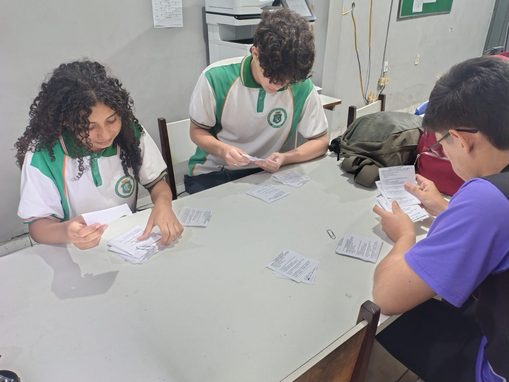

Apresentação do Site aos Professores
No dia 12 de junho, o projeto apresentou o site sobre o "Apocalipse Climático" aos professores da escola. O encontro buscou feedback valioso dos educadores e posicionou a plataforma como ferramenta didática inovadora. A equipe demonstrou as funcionalidades do site, explicando seu uso como fonte de estudo para alunos e auxílio para professores. O feedback foi crucial para futuras otimizações e para consolidar o papel da ferramenta no ambiente educacional.
